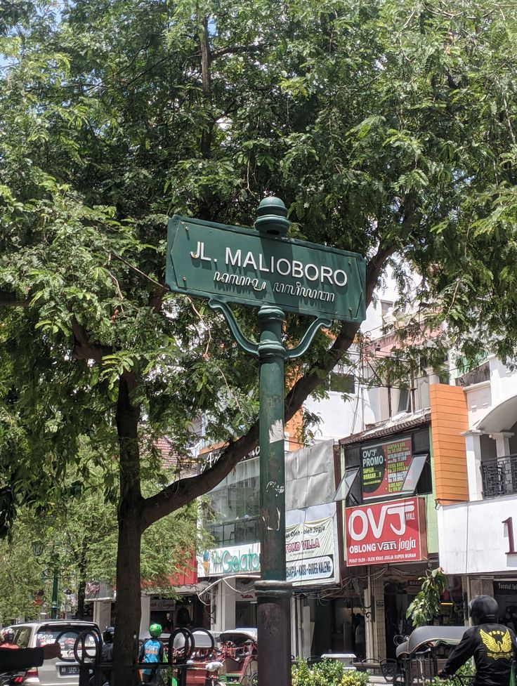

.jpeg)
Jalan Malioboro
Jalan Malioboro merupakan ikon pariwisata yang paling terkenal di Yogyakarta, dikenal sebagai pusat keramaian yang menyuguhkan perpaduan antara budaya, sejarah, dan kehidupan modern. Sepanjang jalan ini, wisatawan disambut oleh deretan toko, pedagang kaki lima, dan seniman jalanan yang menjajakan berbagai produk lokal seperti batik, kerajinan tangan, hingga kuliner khas Jogja. Suasana Malioboro yang semarak, terutama saat malam hari, menjadikannya tempat favorit untuk bersantai sambil menikmati nuansa khas kota pelajar. Keberadaan transportasi tradisional seperti becak dan andong menambah daya tarik tersendiri, membawa wisatawan menyusuri jejak budaya Yogyakarta dengan cara yang unik. Selain sebagai tempat belanja dan kuliner, Malioboro juga dekat dengan berbagai objek wisata bersejarah seperti Kraton Yogyakarta, Benteng Vredeburg, dan Pasar Beringharjo, menjadikannya destinasi wajib bagi siapa pun yang berkunjung ke Jogja.
Kuliner
Kuliner ikonik Yogyakarta yang terbuat dari nangka muda dimasak dengan santan, gula merah, dan rempah-rempah. Disajikan dengan nasi, ayam kampung, telur pindang, dan krecek (sambal goreng kulit sapi). Salah satu tempat terkenal adalah Gudeg Yu Djum di sekitar Malioboro.